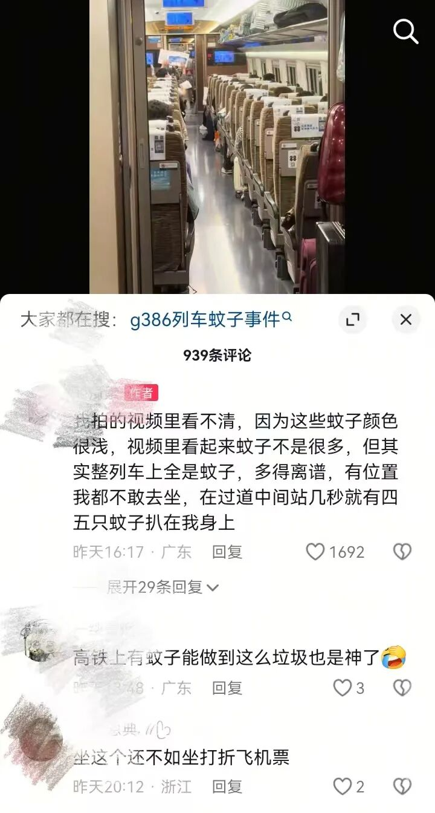

日常清潔，我們往往著重於肉眼可見的表面，卻忽略了那些「看不見的角落」。這些被忽視的清潔盲點，不僅影響環境整潔，更可能成為細菌、病毒和害蟲滋生的溫床，對我們的健康構成潛在威脅。近期高鐵車廂蚊蟲泛濫的事件，再次提醒我們，即使是看似光鮮的環境，若清潔不徹底，也可能暗藏危機。本文將從高鐵事件出發，深入探討清潔盲點的重要性，並分享如何有效解決這些隱憂。
高鐵蚊患事件的警示
根據《香港01》的報導，一列由香港西九龍開往上海的高鐵列車，因在檢修期間開窗通風，導致大量蚊蟲飛入並藏匿於車廂的隱蔽處。列車行駛後，這些蚊蟲集體飛出，嚴重影響了乘客的乘車體驗，甚至有乘客因此提前下車。這起事件清楚地揭示了一個問題：即使是高標準的公共交通工具，若未能顧及到所有細節，特別是那些不易察覺的角落，便可能引發嚴重的衛生問題。

圖片來源：澎湃新聞
「列車員解釋，該趟列車前一日停在潮汕檢修，開窗時大量蚊蟲飛入並藏匿於車廂隱蔽處。」
— 香港01報導清潔盲點：健康隱憂的溫床
高鐵事件中的「車廂隱蔽處」正是我們日常清潔中的「盲點」。這些地方由於位置隱蔽、不易觸及或被習慣性忽略，往往成為灰塵、污垢、細菌和害蟲的藏身之所。長期累積下來，不僅會產生異味，更會成為傳播疾病的源頭。
清潔盲點的危害：
- 滋生細菌病毒： 潮濕、陰暗的角落是細菌和病毒繁殖的理想環境。
- 引發過敏： 灰塵和霉菌是常見的過敏原，容易引發呼吸道問題。
- 招惹害蟲： 蟑螂、蚊子、螞蟻等害蟲喜歡藏匿於陰暗、不潔的角落。
- 影響空氣品質： 累積的污垢和霉菌會釋放出有害物質，影響室內空氣品質。
家居及辦公室常見清潔盲點
無論是家居還是辦公室，都存在著許多容易被忽略的清潔盲點。以下是一些常見的例子：
| 區域 | 常見盲點 | 潛在問題 |
|---|---|---|
| 廚房 | 爐灶邊緣、抽油煙機內部、雪櫃底部和背面、櫥櫃頂部 | 油漬、食物殘渣、蟑螂、細菌 |
| 浴室 | 馬桶底部、洗手盆邊緣、淋浴間角落、地漏、磁磚縫隙 | 水垢、霉菌、細菌、異味 |
| 客廳/辦公室 | 梳化底部、窗簾頂部、冷氣機濾網、電器背面、書櫃頂部 | 灰塵、塵蟎、蜘蛛網、霉菌 |
| 臥室 | 床底、衣櫃頂部、床頭櫃背面、窗台縫隙 | 灰塵、塵蟎、霉菌 |
專業清潔如何解決盲點問題
要徹底解決清潔盲點帶來的問題，需要的不僅是時間和精力，更需要專業的知識和工具。麗雅清潔公司深知這些「看不見的角落」對健康的影響，因此我們的專業清潔服務特別注重細節和全面性。
我們的專業團隊會：
- 深入檢查： 仔細檢查每個空間，識別潛在的清潔盲點。
- 專業工具： 使用專門的清潔工具和設備，如高壓水槍、蒸汽清潔機、吸塵器配件等，有效清潔難以觸及的區域。
- 針對性處理： 針對不同材質和污垢類型，選用合適的清潔劑和消毒劑，確保清潔效果同時不損害物品表面。
- 全面消毒： 清潔後進行全面消毒，特別是針對細菌和病毒容易滋生的盲點，徹底殺滅病原體。
選擇麗雅清潔，讓您的家居和辦公室不僅表面光潔，連同那些「看不見的角落」也能得到徹底的清潔和消毒，為您和家人提供一個真正潔淨、健康的環境。
總結
高鐵蚊患事件是一個重要的提醒，告訴我們清潔工作必須全面而徹底，不能放過任何一個「看不見的角落」。清潔盲點是健康隱憂的溫床，只有將這些地方清理乾淨，才能真正保障我們和家人的健康。麗雅清潔公司致力於提供專業、細緻的清潔消毒服務，幫助您解決所有清潔難題，創造一個安全、舒適的生活和工作環境。